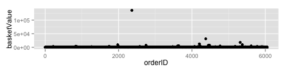

name: inverse layout: true class: center, middle, inverse --- # Our 2015 Data Mining Cup Solution ## Iowa State University Team 2 ### or ## Creating Useful Features in A Wasteland .footnote[Our github page: [github.com/imouzon/dmc2015](https://github.com/imouzon/dmc2015)] --- #Representing Iowa State University ##and #My Incredible Team --- layout: false .left-column[ ## Iowa State ### The Stats Dept ] .right-column[ <center> <h2>Statistics At Iowa State University</h2> </center> ### A Long History of Science with Practice - First statistics course offered in 1915 - Department established in 1947 (the first statistics department in the US) - Snedecor Hall built in 1953 ] --- layout: false .left-column[ ## Iowa State ### The Stats Dept ## Our Team ] .right-column[ <center> <h2> We were able to put together a terrific team </h2> </center> <center> </img> </center> <center> </img> </img> </center> ] --- name: inverse layout: true class: center, middle, inverse --- #What We Did #The Loss and The Features --- name: lossfunc layout: true class: center, middle, lossfunc --- # Dealing with Loss <br><br> $$ E = \\sum\_\{i=1\}^\{n\}\\Biggl\[ \\left\(\\frac\{u\_\{i\} - \\widehat\{u\}\_\{i\}\}\{\\frac\{1\}\{n\}\\sum\_\{i=1\}^\{n\}u\_\{i\}\}\\right\)^\{2\} + \\left\(\\frac\{v\_\{i\} - \\widehat\{v\}\_\{i\}\}\{\\frac\{1\}\{n\}\\sum\_\{i=1\}^\{n\}v\_\{i\}\}\\right\)^\{2\} + \\left\(\\frac\{w\_\{i\} - \\widehat\{w\}\_\{i\}\}\{\\frac\{1\}\{n\}\\sum\_\{i=1\}^\{n\}w\_\{i\}\}\\right\)^\{2\} + \\left\(\\frac\{b\_\{i\} - \\widehat\{b\}\_\{i\}\}\{\\frac\{1\}\{n\}\\sum\_\{i=1\}^\{n\}b\_\{i\}\}\\right\)^\{2\} \\Biggr\] $$ --- layout: false ## The Loss Function Is Weird The basic piece of the loss function is $$ \\sum\_\{i=1\}^\{n\} \\left\(\\frac\{x\_\{i\} - \\widehat\{x\}\_\{i\}\}\{\\bar\{x\}\} \\right\)^\{2\} $$ - We get punished for for missing in either direction - We get punished more for the more we miss by - We get punished more if the mean response is low We have to predict the mean response too! Consider `basketValue`: <center> <img src="www/figs/basketFreq.png" alt="orderFast" height=120></img> </center> There are some enormous values in there - how should that impact our prediction? --- layout: false <center> <h1> Error and <TT>basketValue</TT> </h1> </center> <center> </img> </center> - **Possible Scenarios:** True Value Contributes to **LOSS** and **WEIGHT** | | True basketValue <br> is huge| True basketValue <br> is NOT huge | |--------------------------|:-------------------:|:-----------------------:| | **Prediction is huge** | Small Error<br> Huge Mean | **Huge Error** <br> **Small Mean** | | **Prediction is small** | Huge Error<br> Huge Mean | Small Error<br> Small Mean | - Obviously, we are never better off making incorrect predictions - *But* we could lose the entire competition just by making one mistake in basketValue --- name: inverse layout: true class: center, middle, inverse --- #Decision <br><br> ## Use exponential tools that restrict prediction size --- name: inverse layout: true class: center, middle, inverse --- # Categorical Variables <br><br> ## Problem: Many ML techniques cannot handle categorical data ### (especially with many levels) --- layout: false # Example: Random forests Random forests learn by choosing the best binary split among all predictor variables. This is easy when the data is numeric, because it is ordered. But most categorical variables have no natural order. In fact if a categorical variable has \\(m\\) levels, there are \\(2^{m-1} - 1\\) possible binary splits. This becomes computationally infeasible very fast. Another possibility would be to create dummy variables for each level, but that could greatly increase the dimensionality of the data, especially if we account for interactions between different categorical variables. --- name: inverse layout: true class: center, middle, inverse --- # Another Solution <br><br> ## Find a way to map categorical variables to continuous variables. --- layout: false #Cory Lanker's LLR Approach Let \\(k\\) be some class of observations found in a historical data set \\(\\mathbf\{H\}\\) Let \\(u_\{i,k\}\\) be the response-value related to \\(i\\)th observation from class \\(k\\) in \\(\\mathbf\{H\}\\). We define the log-likelihood ratio statistics for class \\(k\\) : \\begin\{align\} \\text\{LLR\(k\)\} &= \\log\\left\(\\frac\{ \\sum u_i + \\epsilon_1 \}\{ n - \\sum u_i + \\epsilon_2 \} \\right\) \\\\ &= \\log\\left\(\\frac\{ \\text\{adjusted number of times class \} k \\text\{ is used in \} \\mathbf\{H\} \}\{ \\text\{adjusted number of times class \} k \\text\{ is NOT used in \} \\mathbf\{H\} \} \\right\) \\end\{align\} (the greek terms are chosen in a clever way involving Bayesian estimation). For each class \\(1, 2, \\ldots, k\\), we have a different response - the higher the response the more likely future outcomes from the class are to take the value 1. --- #Cory Lanker's LLR Approach All the categorical values can be replaced with meaningful numeric values ### Basic LLRs - Select some observations from our data to create \\(\\mathbf\{H\}\\) - We can calculate LLRs for coupons (coupon ID = class) - We can calculate LLRs for brands (brand = class) ### LLR Interactions - We can calculate LLRs for brand and product group interaction: - Consider each pairing of brand and product group to be a class ### In this way ALL categorical variables can be transformed into numeric values --- name: inverse layout: true class: center, middle, inverse --- # The Final Predictions --- layout: false #Creating a Final Prediction ### When Methods are Weakly Related They Can Improve Each Other <center> </center> --- #Making the Final Prediction ## Our solution involved a 50/50 part combination of 1. Predictions fit by lasso based on variables selected by lasso 2. Predictions fit by Conditional Random Forest based on variables selected by Conditional Random Forest <center> </center> --- name: inverse layout: true class: center, middle, inverse --- # We Are So Thankful To Have Been Invited ## We Would Like To Thank Prudsys For This Opportunity ### and ## ISU's Department of Statistics for Their Support